Appiattire la curva
La COVID-19 è ufficialmente una pandemia. Informiamoci e agiamo insieme.
Ultimo aggiornamento: Mar 30, 2020 9:29 PM (UTC)
Prepararsi, senza panico
Leggi consigli utili per affrontare la crescita esponenziale di casi di COVID-19 con misure proattive e sostegno reciproco.
Conoscenze collettive verificate
Accedi a raccomandazioni di carattere medico verificate e raggruppate in semplici riepiloghi scritti da persone come te e medici.
Globale, inclusivo e in tempo reale
Su questo sito troverai informazioni aggiornate, ottenute da fonti aperte e fornite nel maggior numero di lingue possibile.
È difficile tenersi aggiornati da soli con le notizie, ed è difficile distinguire notizie vere da quelle false. Leggi, contribuisci, e condividi fatti ed informazioni scientifiche che sono state raccolte su questo sito per aiutare tutti noi.
>> Iscriviti per ricevere aggiornamenti dal gruppo di scienziati di FlattenTheCurve.com <<
Gratuito, niente spam o pubblicità
Sì, la situazione è grave
Non c’è bisogno di fasi prendere dal panico, ma non ignorare gli avvisi sulla salute pubblica a riguardo di questo coronavirus. Un’opinione sempre più diffusa è che il contenimento fosse ancora possibile solo poche settimane fa, ma ora è troppo tardi. Lo sviluppo dell’epidemia in Cina ci ha concesso un vantaggio in termini di tempo, ma l’abbiamo sprecato. Stiamo entrando nella fase pandemica, che sarà seguita dalla ricorrenza stagionale della malattia, almeno fino a quando non avremo un vaccino. Che però potrebbe richiedere ancora 18-24 mesi) per essere sviluppato, nella migliore delle ipotesi).
Questa non è una banale influenza
Nemmeno nel migliore dei casi
La stima di un tasso di mortalità del 3,5% realizzata dall’Organizzazione Mondiale della Sanità è una media ottenuta su fasce d’età, e numerosi dati di monitoraggio sono stati forniti a riprova degli elevati numeri di casi asintomatici. È opinione fortemente condivisa che gli ultrasessantenni e chi è affetto da patologie preesistenti rappresentino le categorie più colpite.
All’inizio dell’epidemia, si sperava che la percentuale del 3,5% fosse ampiamente sopravvalutata, tuttavia, man mano che emergono nuove evidenze, questa speranza si va assottigliando. I numeri provenienti dalla Corea del Sud sono a oggi i più ottimistici nel mondo (solo lo 0,7% dei casi si è rivelato fatale); tuttavia, a) la popolazione sudcoreana è mediamente più giovane e b) La Corea del Sud (contrariamente agli USA) ha preso le giuste misure sin dalle primissime fasi dell’epidemia: è stata adottata una combinazione di test a tappeto, trasparenza assoluta, sostegno pubblico e geniali stazioni mobili per il test! Se questo ceppo di Coronavirus è come altri virus, misure forti in grado di contenere la trasmissione potrebbero anche diminuire la “dose” media di particelle virali che provocano un determinato caso; ciò contribuirebbe a ridurre la gravità media della malattia e ad abbassare i tassi di mortalità complessivi. Solo il tempo potrà dirlo.
Inoltre, anche SE il tasso di mortalità reale del Covid-19 fosse solo dell’1% (come è attualmente nel caso della Diamond Princess), sarebbe comunque dieci volte più elevato rispetto a una tipica influenza stagionale.
I 61.099 decessi per influenza negli Stati Uniti durante la grave stagione influenzale del 2017-2018 ammontavano allo 0,14% dei 44,8 milioni di casi stimati di malattia influenzale. Vi furono anche 808.129 ricoveri ospedalieri per influenza stimati, per un tasso dell’1,8%. Supponi che scoppi un’epidemia di Covid-19 di dimensioni analoghe negli Stati Uniti, moltiplica le stime di decessi e ricoveri per 5 o per 10, e otterrai cifre spaventose: da 300.000 a 600.000 decessi, e da 4 a 8 milioni di ricoveri in un Paese che ha 924.107 posti letto [per il totale delle patologie].
Per la maggior parte delle persone, l’infezione porta a una malattia lieve ma comunque contagiosa; è così che si diffonde. Chi si ammala in modo più grave è colpito duramente. La mortalità non rappresenta il quadro completo: l’Italia ha riportato che il 10% dei casi non richiede soltanto il ricovero, ma anche la terapia intensiva – e quella terapia è necessaria per un periodo di 3-6 settimane. Tutto ciò non è sostenibile.
Mantieni il focus sull’obiettivo
Si sono spese molte parole sull’ipotesi di un tasso “effettivo”; tuttavia ci troviamo ancora in una fase precoce della pandemia e potrebbero volerci anni per determinare con precisione il tasso di mortalità. CIÒ CHE SAPPIAMO è che si colloca all’incirca tra il 5% e il 4% di mortalità; questa percentuale è una prova più che sufficiente a giustificare un’azione preventiva decisa, immediata e su larga scala. La cosa più importante da fare è senza dubbio appiattire la curva dell’epidemia in modo che i nostri sistemi sanitari possano far fronte alla situazione e così da dare tempo agli scienziati per la ricerca di vaccini e cure.

È già qui
Fai conto che il virus sia già nella tua città/nel tuo paese/nel tuo posto di lavoro/nella tua chiesa/ecc. Quasi sicuramente è già “qui” e semplicemente non è stato ancora rilevato a causa della mancanza di test. Inoltre sei Stati degli USA non hanno ancora neanche un laboratorio pronto per eseguire il test anche se ne fossero in possesso. Stime dall’Italia affermano che allo scoppio dell’epidemia, il numero di contagi effettivi era di quattro volte il numero dei casi che era possibile confermare in quel momento. La trasmissione con modalità poco chiare era già in atto da settimane prima che venisse rilevata a Seattle. Seattle e Stanford si stanno facendo in quattro per mettersi in pari con i propri kit per il test; circa il 5-7% dei test in Seattle è risultato positivo e chiunque (previa indicazione medica) può sottoporsi al test.
Frustrato dalla mancanza di test dovuta al problema del kit sviluppato dai CDC, il Seattle Flu Study ha cominciato a usare un test sviluppato in-house per analizzare la presenza di Covid-19 in campioni provenienti da persone risultate negative all’influenza. Questo lavoro—ammissibile in quanto trattavasi di ricerca— hanno portato alla luce il caso del giovane contagiato della Contea di Snohomish.
(Per il bene della salute pubblica, La University of Washington sta pubblicando questi risultati). Finora solo UW e Stanford si sono mosse in anticipo con i loro test (non forniti dai CDC); entrambe le istituzioni hanno stabilito la sostituzione delle lezioni in presenza con alternative di didattica a distanza. Un provvedimento che parla da sé; più enti universitari dovrebbero seguire l’esempio. Detto ciò, i docenti necessitano di tecnologie e supporto per effettuare questo passaggio.
Le istituzioni educative con scarse risorse (sprovviste di computer o rete internet) incontreranno molte difficoltà nell’adeguamento. Quindi meglio iniziare dalle università (e discipline) per cui il passaggio comporterà meno disagi. Non ci sono soluzioni univoche, ma la rapidità è essenziale. Professori, non aspettate che la struttura amministrativa del vostro ateneo estenda la decisione a tutto il campus. Passate autonomamente a un’opzione di e-learning. Consulta questi suggerimenti per l’insegnamento online in caso di necessità.
Sistema sanitario
Nessun sistema sanitario è abbastanza preparato
Negli Stati Uniti è disponibile meno di 1 milione di posti letto in ospedale: una quantità di molto inferiore al numero di persone che, secondo le previsioni, dovranno essere ricoverate (4-8 milioni). La Johns Hopkins University ha condotto un sondaggio globale durato 3 anni sulla preparazione alle pandemie. Gli Stati Uniti si sono posizionati al primo posto rispetto agli altri paesi, ma con un punteggio di appena 42 su 100. Semplicemente non abbiamo l’attrezzatura, l’addestramento o un sistema di comunicazione adeguato. Dobbiamo cambiare passo e farlo rapidamente. Nessuno se ne sta preoccupando. Ecco perché le tue scelte contano così tanto.
Chi tra noi ha colleghi nel nord Italia (l’area più colpita) sa che possono contare su medici, docenti di malattie infettive e immunologi eccezionali. E su un sistema sanitario pubblico efficiente. Questo non è un problema da paesi in via di sviluppo irrilevante per gli Stati Uniti.
Politiche
In confronto a quelle di altri Paesi, le politiche del lavoro e sanitarie degli USA possono avere conseguenze catastrofiche in una situazione di pandemia
- Nessuna garanzia universale di [congedo retribuito per malattia] (https://www.worldpolicycenter.org/policies/for-how-long-are-workers-guaranteed-paid-sick-leave)
- Anche per coloro che *hanno* il congedo retribuito per malattia, il periodo di tempo coperto è spesso di pochi giorni, anziché delle settimane da considerare per una malattia prolungata.
- Nessuna garanzia di congedo retribuito per motivi familiari per fornire assistenza a parenti ammalati
- Nessuna garanzia di supporto economico o operativo per chi è tenuto all’auto-quarantena. Ciò porta molti a ignorare la quarantena per procurarsi cibo.
- Molte persone non sono assicurate. Allo stato attuale delle cose (modalità di trasmissione non chiare e assenza di un vaccino), le compagnie assicurative hanno l’obbligo morale, ma nessun incentivo finanziario per migliorare i test e garantire l’accesso all’assistenza.
- Negli USA l’assicurazione è legata all’impiego, pertanto se ci si ammala si rischia anche la bancarotta. In un anno di pandemia, gli effetti sull’economia del Paese sono devastanti.
Il fatto che queste reti di sicurezza non esistessero negli USA complica l’adozione dei comportamenti necessari ad #appiattirelacurva rispetto a gran parte dei Paesi colpiti finora. Tuttavia, la legislazione approvata lo scorso 13 marzo dalla Camera dei rappresentanti statunitense intende affrontare parte di queste criticità. Vale a dire che verranno fornite maggiori indennità di disoccupazione, test per il virus gratuiti, e fondi supplementari per l’acquisto di cibo e per il programma sanitario Medicaid. Il progetto di legge è riportato da New York Times, CNN e altre testate giornalistiche. Puoi consultare il progetto di legge qui.
Monitoraggio e comunicazione globale
Medici di tutto il mondo stanno lottando in prima linea per combattere la crisi, si infettano a causa della mancanza di dispositivi di protezione e loro stessi non possono ricevere le cure di cui hanno bisogno. Per un punto di vista personale in proposito, puoi dare un’occhiata qui, ma non è senz’altro l’unico: le testimonianze sono innumerevoli.
A livello mondiale, l’autoritarismo può condizionare il controllo della pandemia in quanto può limitare la condivisione di competenze e la trasparenza necessarie a un buon processo decisionale, al miglior utilizzo possibile delle risorse, e alla comunicazione circa lo status corrente a connazionali e cittadini di tutto il mondo. Esempi in questo senso ci arrivano dalla Cina (la prima ad affrontare l’epidemia), e da Iran, Turchia e Russia, che fino a poco tempo fa riportavano lo scenario statisticamente irrealistico dell’assenza di casi. Siti web dell’Ambasciata statunitense nei singoli paesi cominciano a riportare casi, per esempio l’Ambasciata USA in Russia. Sono attualmente disponibili un certo numero di risorse efficaci di visualizzazione dei dati e tracciamento dei casi nel mondo, per esempio presso il Johns Hopkins Coronavirus Resource Center e le Mappe dei casi di Coronavirus del New York Times
C’è speranza.
C’è una speranza: sei tu. È così che funziona
Puoi dare un contributo seguendo il più possibile queste indicazioni. Prima si prendono contromisure, più precauzioni si prendono, più vite saranno salvate. Non potrebbe essere più semplice. Le persone che ieri hanno sottovalutato il problema sono le stesse che ora stanno reagendo in modo eccessivo. Resisti all’impulso di allontanare o di perdere la speranza. È fondamentale mantenere la calma, lavorare in modo costante per controllare l’infezione e spingere le altre persone a seguire il suo esempio.
Da un caro amico di Pechino: “Allontanate il più possibile la paura e l’isteria che potrebbero colpire le vostre città. Usate il buon senso, ma non lasciate che diventi una scusa vuota per non amare i vostri simili. Scegliete la generosità invece di accumulare scorte. E nei momenti più difficili (o forse dopo aver visto troppi notiziari), mettete la musica ad alto volume e ballate! Celebrate la gentilezza. È lì, non scomparirà, e voi potete catalizzarla”.
Informazioni sugli autori
Maggiori informazioni sugli autori qui
Affiliazioni
Attenzione: non parliamo a nome di nessuna istituzione.
Facciamo del nostro meglio per utlizzare fonti d’informazione attendibili e aggiornare il sito rapidamente. Per favore, fateci sapere se ci sono problemi con la veridicità o la pertinenza del contenuto; se sei un virologo o lavori nel settore della sanità pubblica o simili, e desideri contribuire, consulta questa pagina.
Chi seguire
Chi seguire se sei interessato all’aspetto scientifico delle pandemie
I veri eroi sono quelli in prima linea e quelli il cui lavoro è sopra citato. Ecco alcuni che sto seguendo per diverse ragioni. Il fatto che li abbia citati non implica che abbiano letto o approvato questa guida. Una lista non esaustiva dei loro profili su Twitter è qui di seguito. Seguo anche molte altre persone (non legate all’epidemia), che potete visualizzare qui: https://twitter.com/figgyjam/following